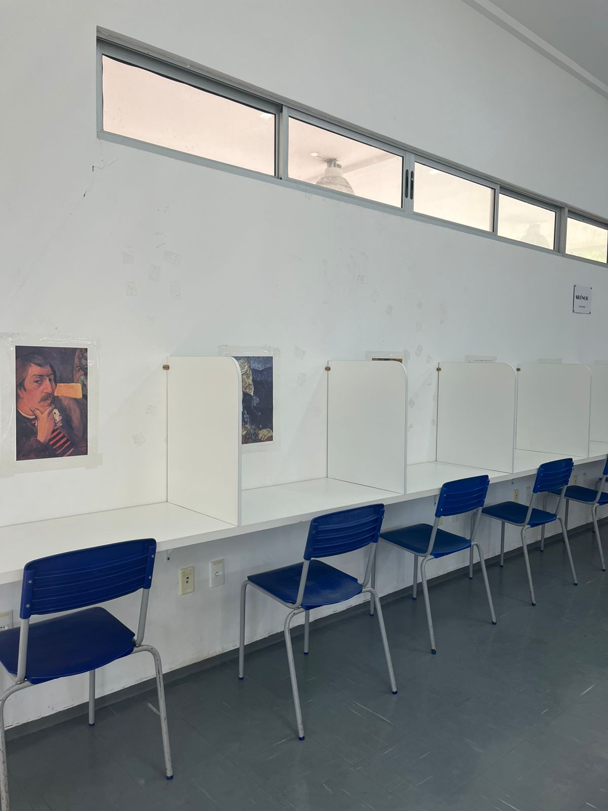
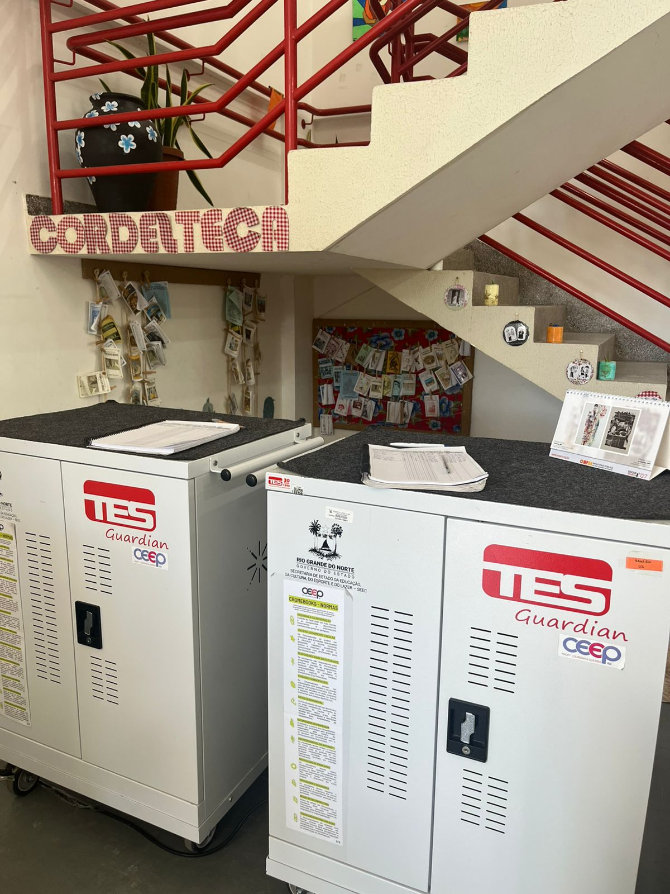

Seja bem-vindo à nossa biblioteca!
A biblioteca da escola oferece diferentes espaços e atividades que ajudam no estudo, na leitura e na organização dos alunos,
tornando o ambiente mais completo e acolhedor.
A cabine de estudos, localizada no segundo andar, é um espaço pensado para a concentração.
Ela proporciona mais silêncio e tranquilidade, sendo ideal para quem deseja estudar com foco e sem muitas distrações.
Assim, os alunos conseguem aproveitar melhor o tempo de estudo.
Além disso, a biblioteca conta com vários cantos de estudo distribuídos pelo ambiente,
permitindo que cada aluno escolha o local mais confortável para se concentrar.

A biblioteca disponibiliza Chromebooks para uso dos alunos.
Para utilizá-los, é necessário ir até os gaveteiros, retirar o equipamento e realizar o registro com o nome e o horário de retirada.
Na devolução, também deve ser anotado o horário de entrega.

Para realizar o empréstimo de livros, o aluno deve ir até a biblioteca, escolher o livro desejado e solicitar o empréstimo com a responsável Sandra.
Ela será encarregada de registrar o empréstimo e liberar o livro.
A biblioteca também possui um cantinho de descanso com um tapete, onde os alunos podem se deitar para ler cordéis e outros livros de forma mais confortável.
Esse espaço é ideal para momentos de leitura mais leve e relaxante.
Para manter o ambiente sempre limpo e agradável, é necessário retirar os tênis ao entrar na biblioteca.